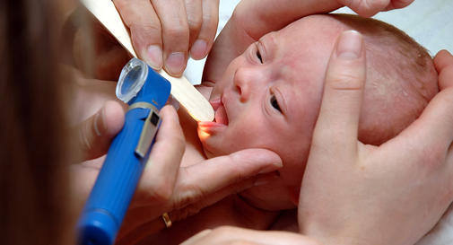
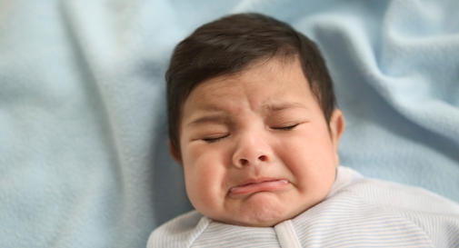
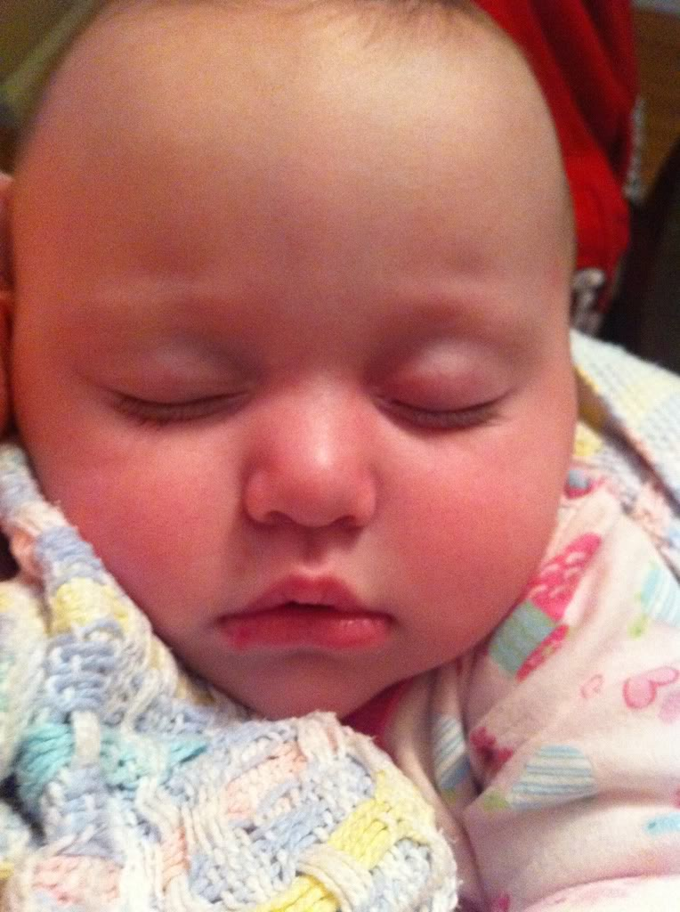

There's no getting around it: Babies cry. It's how they communicate hunger, pain, fear, the need to sleep, and more.
So how are you supposed to know exactly what your baby is trying to tell you? It can be tricky to interpret your child's cries, especially at first. Here are the most common reasons babies cry:
Why Babies CryLearn more
Hunger
This is probably the first thing you think of when your baby cries. Learning to recognize the signs of hunger will help you start feeding your baby before the crying stage. Some hunger signs to watch for in newborns include fussing, lip smacking, rooting (a newborn reflex that makes babies turn their head toward your hand when you stroke their cheek), and putting their hands to their mouth.
Something painful and hard to notice
Babies can be troubled by something as hard to spot as a hair wrapped tightly around a tiny toe or finger, cutting off circulation. (Doctors call this painful situation a "hair tourniquet," and it's one of the first things they look for if a baby seems to be crying for no reason.) Some babies are extra sensitive to things like scratchy clothing tags or fabric. And they can be very picky (understandably) about subtleties ranging from the position they're held in to the bottle you offer.
A dirty diaper
Some babies let you know right away when they need to be changed. Others can tolerate a dirty diaper for quite a while. Either way, this one is easy to check and simple to remedy.
Teething pain
Teething can be painful as each new tooth pushes through tender young gums. Some babies suffer more than others, but all are likely to be fussy and tearful from teething at some point. If your baby seems to be in pain and you're not sure why, try feeling his gums with your finger. You may be surprised to discover the hard nub of an emerging baby tooth. (On average, the first tooth breaks through between 4 and 7 months, but it can happen earlier.)
Too cold or too hot
If your baby feels chilly, like when you remove her clothes to change a diaper or clean her bottom with a cold wipe, she may protest by crying. Newborns like to be bundled up and kept warm – but not too warm. As a rule, they're comfortable wearing one more layer than you need to be comfortable. Babies are less likely to complain about being too warm than about being too cold, and they won't cry about it as vigorously.
Wants to be held
Babies need a lot of cuddling. They like to see their parents' faces, hear their voices, and listen to their heartbeats, and can even detect their unique smell. Crying can be their way of asking to be held close. You may wonder if you'll spoil your baby by holding him so much, but during the first few months of life that isn't possible. To give your arms some relief, try wearing your baby in a front carrier or sling
Seeing your child suffer with any kind of physical problem is a heart-wrenching (and sometimes scary) experience. Arm yourself with information about common and uncommon discomforts and conditions, from roseola, thrush, and stomach flu to flat head syndrome and worrisome birthmarks – and from diarrhea and ear infections to vision problems like amblyopia (lazy eye). Plus: Learn how to recognize head lice and whether it's worth using a lice removal service or salon.
Illnesses & ConditionsLearn more
Jaundice

I think my baby's skin looks a little yellow. Is this normal?
Yes, about 60 percent of full-term babies have a yellowish cast to their skin – called jaundice – during their first week or two of life. In fact, virtually all newborn babies have some jaundice, but it's not always noticeable. For most babies, this is a temporary, harmless condition that goes away on its own or with mild treatment. But in rare cases, it's very serious, so it's important to keep an eye on it. What causes jaundice? High levels of a pigment in the blood called bilirubin cause the skin to look yellow. Everyone's blood contains bilirubin. Bilirubin is one of the byproducts created when old red blood cells break down. Normally, the liver removes bilirubin from the blood and the body then gets rid of it in bowel movements. During pregnancy, the mother's liver eliminates bilirubin for her baby. After birth, it takes a while for the baby's liver to start doing the job. The result: Pigment builds up in the baby's blood and his skin takes on the yellowish cast of jaundice. This type of jaundice, called physiologic jaundice, usually appears on a baby's second or third day of life and disappears on its own within two weeks. (In premature babies, it peaks at 5 to 7 days and may take up to two months to go away.) The yellow color tends to appear first in a baby's face, then move downward to his neck and chest and on down until, in extreme cases, it reaches his toes.Sore Throat

My child seems to have a sore throat – he's uncomfortable swallowing and his cry sounds scratchy. Could it be caused by an infection?
It's possible. Your child may have a sore throat caused by any one of a number of illnesses, such as a cold or flu virus. Measles, chickenpox, and croup can also cause a sore throat. In fact, the most frequent cause of a sore throat is a viral infection. If the doctor diagnoses tonsillitis, it means that the bumpy tissue on either side of the back of your child's throat is infected with a virus or bacteria. The most common bacterial culprit is streptococcus (strep), but this is unusual in babies and toddlers. Another bacterial infection that can cause a sore throat is whooping cough. Irritants in the air – secondhand tobacco smoke, cat or dog dander, dust, and pollen from ragweed, grass, and trees – can also bother a child's throat and trigger the cold-like symptoms known as allergic rhinitis, or hay fever. Even dry heat can make it hard for your child to swallow if he tends to sleep with his mouth open. If this is the case, his mouth will be dry when he wakes up, but he'll feel fine as soon as he's had something to drink.Ear Infection
How to tell if your baby has an ear infection
The easiest way to tell if your baby might have an ear infection (or any other illness, for that matter) is by observing a change in his mood. If your baby gets fussy or starts crying more than usual, be on the lookout for a problem. If he develops a fever (whether slight or high), you have another big clue. Ear infections tend to follow a common cold or sinus infection, so keep that in mind too.
You may also notice the following symptoms:
1.Your baby pulls, grabs, or tugs at his ears. This could be a sign he's in pain. (Babies do pull on their ears for many other reasons, so if your baby seems otherwise fine, he probably doesn't have an ear infection.)2.Diarrhea or vomiting.
The bug that causes the ear infection can also affect the gastrointestinal tract.3.Reduced appetite.
Ear infections can cause gastrointestinal upset. They can also make it painful for your baby to swallow and chew. If your baby has an ear infection, he may pull away from the breast or bottle after he takes the first few sips.4.Yellow or whitish fluid draining from the ear.
This doesn't happen to most babies, but it's a sure sign of infection. It also signals that a small hole has developed in the eardrum. (Don't worry – this will heal once the infection is treated.)5.Unpleasant smell.
You may smell a foul odor coming from your child's ear.6.Difficulty sleeping.
Lying down can make an ear infection more painful.Cold Sore

What causes cold sores?
Cold sores are caused by the herpes simplex virus. Herpes simplex virus type 1 usually causes cold sores, and herpes simplex virus type 2 usually causes genital herpes, though either can cause sores in the facial or genital area.How did my child get the virus?
Someone with the virus – most likely in the form of a cold sore or herpes gingivostomatitis – gave it to him. Most people who get the herpes simplex virus get it sometime during childhood. For example, maybe your child shared a cup, utensil, or slobbery toy with someone who has the infection. Or maybe he was kissed by someone with the virus in her saliva (whether or not the person had a visible sore).Babies can also get the herpes virus during a vaginal birth if their mother has genital herpes. You can't transmit the virus to your baby by breastfeeding, though, even if you have an active cold sore.
Are there other symptoms?
During the first bout with the herpes simplex virus – called primary herpes – your child may have mouth soreness (the blisters can spread throughout the mouth during this first episode), gum inflammation, and perhaps a fever, swollen lymph nodes, and a sore throat. These primary symptoms may be very mild, and you may not even notice them. Your child will get better in about 10 to 14 days, but the virus will stay in her body for life. In some people, the virus lies dormant and never acts up. In others, it periodically flares up and triggers cold sores. These flare-ups are called secondary herpes. Stress, fever, and sun exposure – but not contact with a cold sore – seem to trigger outbreaks. During these secondary flare-ups, your child probably won't have swelling of her gums or lymph nodes or a fever or sore throat, but she will have the telltale blistering on or near her lips.Are cold sores ever dangerous?
Cold sores themselves aren't dangerous, but it is possible for the virus to spread to other parts of the body – and that can be dangerous. It's very unusual for a child to get a cold sore in the first six months or so of life, because the antibodies received from his mother offer some protection. But if your baby is younger than 3 months old and he gets any kind of mouth sore, call his doctor right away. In young babies, in particular, the herpes virus can spread to the brain and other organs, causing serious, potentially permanent or fatal damage. Try to keep your child from touching his eyes when he has a cold sore. When the virus spreads to the eyes, it's called ocular herpes. This is a serious eye infection. If your child develops a sore on his eyelid or the surface of his eye, call the doctor right away. Your child may need antiviral drugs to keep the infection from scarring his cornea. In rare cases, ocular herpes can weaken vision and even cause blindness.What's the best way to treat a cold sore?
A cold sore will go away on its own. Here are some ways to ease any discomfort:
1.Apply ice (or a cool, wet cloth) to the sore, to help with redness and swelling.
2.Give your child the proper dose of a mild pain reliever, such as acetaminophen or (if she's 6 months or older) ibuprofen. (If your child is younger than 3 months old, call the doctor before giving her any medication. And never give aspirin to a baby. It could trigger Reye's syndrome, a rare but life-threatening illness.)
3.Avoid citrus fruit and other acidic food (such as tomatoes) that might make the sore hurt more.
4.Try over-the-counter ointments to relieve the pain and help heal the cold sore. (If your child is younger than 12 months, check the age recommendations on the package and talk with the doctor about what's best for your child.)
5.If the sore is severe, the doctor may prescribe an antiviral topical or oral medicine.
6.If your child's cold sore is painful, it may interfere with eating. If that's the case, talk with her doctor right away.